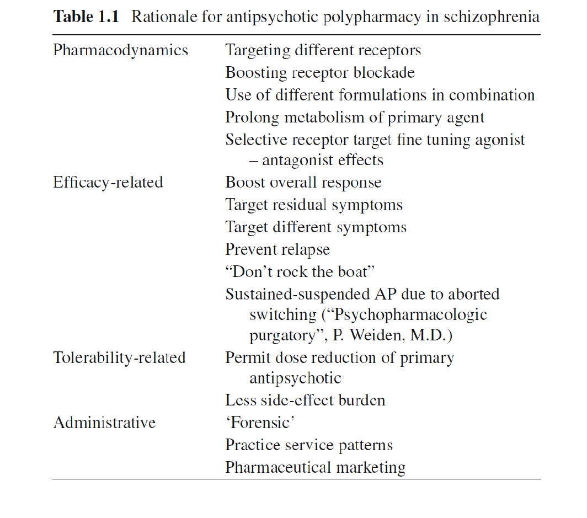

적극적인 의사들은 초발 환자인 경우라도 치료저항성을 보이면 일찌감치 클로자핀을 사용할 것을 권하고 있다.(Ofer Agid et al. 2007) 그러나 아무리 치료성적이 좋다고 해도 실제로 사용하기에는 진입장벽이 높다. 무과립구증의 위험은 비율이 매우 낮아서 무시할 수 있다 하더라도, 진정작용이나 체중 증가, 침흘림, 야뇨증, 심장 및 위장관계 부작용 등, 위험은 낮아도 빈번한 부작용이 현실에서의 사용을 제한한다.(Iqbal et al. 2020)
따라서 치료저항성 환자에게 클로자핀을 이용하기 전에 다른 방도를 먼저 시도해보는 것이 보통이며, 이는 크게 1) 기존의 약물을 더 오래, 더 높은 용량으로 사용해 보거나, 2) 다른 항정신병 약물로 교체하거나, 3) 항정신병 약물 이외의 다른 약물을 병용 투여하거나, 4) 두 가지 이상의 항정신병 약물을 조합하는 것으로 나눌 수 있다.
3-1. 고용량 처방
제조사의 권장량, 임상연구에서의 용량, 가이드라인 권장 용량 등은 서로 다를 수 있으며, 실제 환자에게 적용할 때는 큰 도움이 되지 않는다. 부작용을 자주 평가하고, 필요할 때마다 실험실 검사를 진행한다면 권장 용량보다 높여도 대개 문제가 없다. 간혹 항정신병 약물을 과다 투여하여 응급실을 방문하는 환자가 있지만 부정맥의 위험 말고는 치명적인 경우는 드물다.(Trenton, Currier, and Zwemer 2003) 이런 이유에서인지 권장 용량보다 높게 투여하는 것은 다약제 투여와 함께 치료저항성 환자에서 가장 널리 시도되는 방법이다.(Howes et al. 2012)
권장 용량 혹은 표준 용량이란 보통 대상 환자의 50%에서 기대한 효과를 나타내는 용량 즉 중앙 유효량(median effective dose, ED50)을 말한다. 이는 예를 들어 올란자핀 10mg, 리스페리돈 2mg, 퀘티아핀 200mg 등의 용량으로 예상외로 낮다. 이에 비해 최대용량에 근접하는 용량 (near-maximal effective dose, ED95)이란 대상 환자의 95%에서 기대한 효과를 나타내는 용량, 혹은 약물이 발휘할 수 있는 거의 최대 효과를 나타내는 용량으로 정의된다. 이는 아리피프라졸 11.5mg, 올란자핀 15.2mg, 팔리페리돈 13.4mg, 퀘티아핀 482mg, 리스페리돈 6.3mg 정도이다.(Leucht et al. 2020)
표준 용량에서 반응이 없는 경우, 최대 근접 용량을 시도하는 것은 자연스러우며 대부분의 정신과 의사는 이 정도 용량을 시도하지 않고는 치료 실패라고 단정짓지 않을 것이다. 애초 Kane의 정의(11장 1-3-1절 참조 article-11-01.html#kane-resistance)에 따르면 치료저항성을 판정하기 전에 적어도 클로르프로마진 등가 용량으로 1,000mg 이상을 사용해보았어야 하며, 완화된 기준도 적어도 600mg 이상 사용해보았을 것을 권하고 있다. 그러나 클로르프로마진의 최대 근접 용량은 450mg 정도에 지나지 않는다.
논란의 대상이 되는 것은 최대 근접 용량 보다 더 용량을 높였을 때 얼마나 도움이 되느냐이다. 개인에 따른 약동학적 차이나, 병용 투여되는 약물에 의한 대사률 변화 등 다양한 원인에 의해 혈중 농도가 변화하며, 뇌혈관 장벽을 통과하는 비율도 달라지므로, 이러한 변수가 의심된다면 용량을 최대한 높여볼만 하다. 대체로 선조체 D2 수용체의 60~80%를 차단하면 유효한 치료반응을 얻을 수 있고, 이 이상 차단 비율이 상승하면 부작용이 급증한다고 알려져 있다.(2장 8-3절 참조) 그러나 이는 일반적인 환자에 대해서이고, D2를 좀더 차단해야만 양성 증상 및 공격성을 조절할 수 있는 환자가 있는 법이다. 물론 이러한 사실은 임상 연구를 통해서는 입증되기 어렵다. 이 정도로 치료가 어려운 환자는 임상 연구 자체에 포함되기 어렵기 때문이다. Agid 등(O. Agid et al. 2011)은 표준 용량에 반응하지 않는 환자를 대상으로 1) 올란자핀 22.5~30mg, 리스페리돈 6.5~10mg 까지 용량을 높여보았다. 그 결과 표준 용량에서 반응한 환자 비율이 71% 였는데 비해 고용량에서의 반응율은 75%로 불과 4% 증가하는데 그쳤다. 동일한 연구에서 약물을 교체해보았더니 역시 추가 4% 정도의 환자만 반응하였으며, 클로자핀으로 교체한 이후에야 비로소 앞서 두 단계에서 반응을 보이지 않았던 환자의 75%가 반응하였다. 결국 힘들게 용량을 높이는 것 보다는 서둘러 클로자핀으로 교체하는 것이 훨씬 수월했다는 뜻이다.
다른 몇몇 임상 연구 및 메타 분석에서도 최대 근접 용량을 넘어서면 효과는 별반 그대로이면서 부작용만 증가하게 된다고 결론짓고 있다.(Honer et al. 2012)(Dold and Kasper 2015)(Samara et al. 2016) 이러한 결론은 앞으로도 크게 바뀔 것 같지 않으며, 치료가이드라인을 중요시하는 연구자들은 더더욱 고용량 치료가 필요없다고 강조한다. 아무래도 치료저항적 환자에서의 고용량 투여는 가장 손쉽지만 동시에 가장 효과가 떨어지는 방법으로 보인다.
3-2. 다른 항정신병 약물로 교체
3-2-1. 교체 약물의 선택
모든 항정신병 약물은 D2 수용체 차단을 기본적인 작용기전으로 삼고 있지만, 개개 약물마다 독특한 차이가 있다. 따라서 한가지 약물에 반응하지 않는 환자가 다른 종류의 약물에 반응할 지 모른다고 기대하는 것은 자연스럽다. 여기서 주목할 것은 치료저항성을 정의하는 몇몇 기준들은, “서로 다른 클래스”에 속하는 약물을 사용해보아야 한다고 명시했다는 점이다. 즉 작용 메카니즘이 거의 동일한 약물이라면 약물을 바꾸는 의미가 반감된다. 한 가지 약물에 실패했다면, 교체할 약물은 전혀 다른 작용기전을 가진 약물 중에서 선택해야 한다.
그런데 약물들의 클래스를 나눈다는 것이 생각보다 쉽지 않다. 모든 약물은 수용체 결합 프로파일이 조금씩 다른데, 어떤 기준으로 클래스를 나눠야 하는지에 대해선 정해진 바가 없다. 정형 약물 시대에는 역가와 함께, 결합하는 수용체의 다양성에 의해 약물을 구분하였다. 즉 할로페리돌, 피모자이드과 같이 비교적 순수한 D2 수용체 차단제이면서 역가가 높은 약물, 그리고 클로르프로마진처럼 다양한 수용체에 결합하면서 역가가 낮은 약물로 구분되었다. 경우에 따라서는 퍼페나진과 같이 그 중간에 속하는 약물을 다른 클래스로 구분하기도 하였다.(Verster et al. 2010)
한편 비정형 항정신병이 도입된 이후에는 정형과 비정형이라는 두 가지 클래스로 구분하는 것이 일반화 되었다. 다양한 비정형 약물들은 한데 묶여 동일한 클래스로 취급받거나, 역으로 각자가 서로 다른 클래스에 속하는 것으로 여겨졌다. 클로자핀만은 예외취급을 받아 어떤 클래스에도 속하지 않는 것으로 간주되었다. 이러한 상황은 아리피프라졸의 등장으로 변화되기 시작하였다.(Mailman and Murthy 2010) 도파민 부분효현제인 아리피프라졸은, 세로토닌-도파민 수용체 차단제라는 비정형 공식에서 벗어나있었으며, 이후 등장한 소위 참신한(novel) 항정신병 약물의 원형이 되었다. 예를 들어 cariprazine, brexpiprazole, lumateperone 등은 모두 도파민 부분효현제로서 작용한다. (3장 4-1 참조) 따라서 현재 서로 다른 클래스라고 하면, 1) 정형 약물, 2) 클로자핀을 제외한 비정형 약물, 3) 클로자핀, 4) 도파민 부분효현제로 나눠질 수 있다. 앞으로 순수한 세로토닌 수용체 차단 약물이나 글루타메이트 수용체 약물이 등장한다면 클래스가보다 다양해질 지도 모른다. 치료저항성 환자에게 약물을 교체한다는 것은 이렇듯 실패했던 약물과는 클래스가 다른 약물로 교체해야 한다는 뜻으로, 선택에 신중을 기해야 한다. 무조건 새롭게 개발된 약물이 더 효과적이라는 뜻은 아니기 때문에, 비정형 약물에 효과를 보지 못했다면 정형 약물을 시도해보는 것도 방법이다.
3-2-2. 약물 교체시 주의점
약물을 바꾼다는 것은 항상 위험성을 수반한다. 치료 효과가 부족하다곤 하지만, 그나마 이전 약물에 의해 현재 정도의 안정상태를 유지하고 있는지도 모른다. 특히 고정된 처방을 오래 써온 환자는 사소한 약물 교체나 용량 변경으로 인해서도 안정 상태가 무너질 수 있다. 이런 잠재적 위험성을 최소화하기 위해서는 점진적인 교체 방법(cross-tapering)이 권장된다.(Weiden 2006) 기존의 약물을 서서히 줄이면서 새 약물을 도입하는 것이다. 증상이 심해서 약물 변경 시 악화 위험이 높다고 판단되면, 두번째 약물을 어느 정도 용량 이상으로 투여한 뒤에 비로서 앞서 사용했던 약물을 감량하는 전략을 취할 수도 있다. 이렇게 조심스레 접근하다보면, 새 약물을 추가하여 환자가 호전되었을 때 이전 약물을 끊지 못하고 의도치 않게 다약제 처방이 될 수도 있지만, 원칙은 이전 약물을 끊는 것이다. 환자가 좋아진 것은 두 약물의 조합이 아닌 새로운 약물에 의한 것이라 판단하는 것이 합리적이기 때문이다.
그러나 비정형 약물 사이의 작용기전 차이는 미미한 편이기 때문에, 첫번째 약물에 반응이 없었다면 약물을 교체해도 큰 기대를 할 수 없는 것이 현실이다.(Stauffer et al. 2011)(Lally et al. 2016) CATIE (Clinical Antipsychotic Trials of Intervention Effectiveness, 3장 6-1절 참조) 연구에서는 한 종류의 약물에 실패한 환자들을 적극적으로 다른 약물로 교체해가면서 관찰을 지속하였는데, 어떻게 해도 클로자핀으로 교체한 군의 반응율을 따라갈 수 없었다.(Rosenheck et al. 2009) 게다가 약물을 중간에 교체한 환자는 처음 약물을 그대로 지속한 군에 비해 중도 탈락률이 더 높았다.(Essock et al. 2006) 이는 매우 의기소침해지는 연구 결과로 치료저항적인 환자는 약물을 어떻게 바꿔봐도 별 소용이 없을 뿐더러, 자주 약물을 바꾸면 약물에 대한 신뢰도만 떨어뜨린다 결론이었다.
만약 과거의 치료 실패가 부분 순응문제 때문이었다면 고민하지 말고 장기지속형 주사제를 사용해보아야 한다. 반복된 지적이지만 최근의 치료저항성 판정기준에는 장기지속형 주사제 사용을 꼭 시도해보기를 권하고 있다. 한발 더 나아가 반드시 순응도 때문이 아니었더라도, 경구 약물로 치료에 실패했을 때 주사제를 사용하는 것이 긍정적인 결과를 가져올 가능성이 있다. 주사제의 안정된 혈중 농도 유지 특성이 치료 반응을 높이는데 도움이 될 수 있다. 대표적인 예로 도파민 초과민성때문에 유발된 치료저항성 환자의 경우 장기지속형 주사제가 매우 효과적이라는 보고가 있다.(Kimura et al. 2014)
3-3. 병용요법 혹은 증강요법
정신과 영역에서 다약제 투여(polypharmacy)는 눈살을 찌푸리게 하는 용어이긴 하지만 실상 모든 정신과 의사가 행하고 있는 치료전략이다. 정의로만 따지면 동일한 질병을 치료하기 위해 두 가지 이상의 약제를 쓰는 것을 다약제 투여라 하지만, 숨겨진 의미는 반드시 필요한 약제 이외에 더 많이 투여하는 것을 가리킨다. 다약제 투여라는 용어는 다양한 개념을 포함하고 있으며, 이들은 문헌에서도 혼란스레 사용되고 있다.
좁은 의미의 다약제 투여는, 동일한 효과의 약제 혹은 동일한 클래스의 약제를 여러 개 동시에 투여하는 것이다. 이를 병행약물(concurrent/concomitant medication)이라고도 한다. 리스페리돈과 할로페리돌을 동시에 투여하는 것, 플루옥세틴과 파록세틴을 동시에 투여하는 것은 동일한 클래스의 약물을 사용하는 경우이다. 클로자핀과 아리피프라졸처럼 서로 다른 클래스의 약물을 투여하는 경우도 있지만 둘다 기대하는 효과는 동일하다. 이와는 달리 병용요법(adjunctive therapy)이란 치료 대상이 되는 질병은 같지만 기대하는 효과가 전혀 다른 약물을 사용하는 것이다. 항정신병 약물과 항우울제, 혹은 기분안정제를 함께 투여하는 것이 여기에 속한다. 그 밖에도, 항정신병 약물의 부작용을 해소하기 위해 항파킨슨 제제를 함께 투여하는 것, 수면 조절을 위해 벤조디아제핀을 투여하는 경우도 병용요법에 속한다.
매우 유사한 개념으로 증강요법(augmentation therapy)이 있다. 주로 사용되는 약제만으로 효과가 부족할 때, 다른 용도의 약물을 소량 첨가함으로써 부족한 반응을 보충한다는 의미이다. 추가 되는 약물은 단독으로 사용될 때에 비해 낮은 용량이 사용된다는 특징이 있다. 예를 들어 난치성 우울증에 항우울제와 더불어 갑상선 호르몬을 소량 섞는 경우이다.(Shrivastava et al. 2013)
개념들이 서로 얽혀 있어 복잡하지만 치료저항성 조현병 치료에서 주로 언급되는 것은, 1) 항정신병 약물과 비항정신병 약물을 섞어 쓰는 병용요법과 2) 두 가지 이상의 항정신병 약물을 쓰는 다약제/병행 투여 두가지이다. 후자에 대해선 달갑게 여기지 않는 의사들도 전자에 대해선 적극 수용하고 있다. 병용 투여를 하는 이유는 치료저항성을 넘어서기 위해서이기도 하지만, 항정신병 약물로는 호전되지 않는 증상을 치료하기 위해서이기도 하다. 후자의 예로는 동반된 우울이나 강박증상을 치료하기 위해 선택적 세로토닌 재흡수 억제제(SSRI)를 사용하는 것이 있다.
안타깝게도 기존의 항정신병 약물에 어떤 약물을 병용했을 때 분명히 효과적이라는 임상 증거는 희박한 편이다. 지금까지 무척이나 다양한 향정신성 의약품들이 항정신병 약물과 함께 병용요법으로 시도되어 왔으며, 이 밖에도 항염증제, 항산화제, 호르몬조절제, 글루타메이트 및 니코틴 수용체 조절제, 내인성 카나비노이드 제제(2장 2-1절 참조) 등이 연구되었다.(Bumb, Enning, and Leweke 2015)(Brown and Roffman 2016) 벤조디아제핀 사용을 병용요법의 하나로 보기도 하나(Sim et al. 2014),실제 임상에서는 거의 모든 조현병 환자에게 투여되기 때문에 굳이 병용요법이라 할 수 있을 지 의문이다. 이를 제외하고 가장 많이 사용되는 병용요법 제제는 항우울제와 기분안정제이다.
3-3-1. 항우울제
조현병에서 항우울제가 사용되는 것은 치료저항성을 해결한다기 보다는 동반된 우울/음성/강박 증상을 해결하기 위해서이다. 항우울제는 조현병 환자에게 가장 많이 병용 투여되는 약물 중 하나이며, 미국, 유럽에서는 대략 40%에 달하는 조현병 환자에게 투여된다.(M.-D. Zhang and Mao 2015)
비정형 항정신병 약물의 비정형성이 5-HT2A 수용체 차단에 있다고 흔히들 이해되고 있기 때문에, 세로토닌 계에 영향을 미치는 항우울제는 우울 증상 개선을 넘어서 음성 증상에 효과가 있을 것으로 기대된다. 대표적인 예로 5-HT2A 길항제인 ritanserin은 음성 증상 개선제로 기대를 모았으나 아쉽게도 임상에 도입되지는 못했다.(18801405) 최근의 한 임상 연구에서는 또 다른 5-HT 길항제인 vortioxetine이 리스페리돈과 병용 투여되었을 때 음성 증상을 유의하게 호전시켰다고 보고되었다.(Moazen-Zadeh et al. 2020) 정확한 기전은 알 수 없지만, 항우울제를 병용 투여하면 전전두엽의 도파민과 노르에피네프린 활성이 늘어나기 때문에, 이 또한 음성 증상에 도움이 될 것으로 기대되었다.(W. Zhang 2000) 한 메타 분석에서 다양한 항우울제는 조현병 환자의 음성 증상 호전에 중등도 정도의 효과 크기를 보이는 것으로 평가되었다.(Singh et al. 2010)
항우울제를 병용할 때는 약동학적(pharmacokinetic)뿐 아니라 약력학적(pharmacodynamic) 상호 작용을 고려하여야 한다. 오래전부터 삼환계 항우울제와 SSRI는 비교적 안전하게 병용 투여되어 왔다. 노르에피네프린 활성을 높이는 Noradrenergic and specific serotonergic antidepressants (NaSSAs)나 SNRI, 그리고 도파민 활성을 높이는 부르포피온 등은 정신병적 증상을 악화시킬 수 있다는 우려를 자아냈으나, 실제 임상에서는 큰 무리없이 사용된다. 특히 부프로피온은 조현병 환자의 금연을 위해 사용되기도 하며, 미르타자핀은 좌불안석을 호전시키는 효과가 있다.(Englisch et al. 2013)(Kishi and Iwata 2013) 멜라토닌 수용체 및 5-HT2C에 작용하는 항우울제 agomelatine은 일주기 리듬을 조절하고 수면 패턴을 향상시지만 조현병 환자에서의 경험은 부족한 상태이다.(Englisch et al. 2013)
3-3-2. 기분 조절제 및 항경련제
선조체의 도파민 활성은 시냅스 전 뉴런의 GABA와 글루타메이트 활성에 의해 조절된다. 특히 parvalbumin을 포함하는 GABA 분비 사이뉴런은 선조체 도파민 분비를 억제하며, 그 자신은 NMDA 수용체를 통한 글루타메이트 신호에 의해 조절을 받는다.(2장 10-4절 참조) 조현병과 글루타메이트의 관계는 이중적이어서, NMDA 수용체를 통한 신호는 오히려 저활성이어서 문제가 되지만, 전반적인 글루타메이트의 과다분비와 이로 인한 농도 증가는 흥분성 독성(excitotoxicity)을 유발하여 가뜩이나 결함이 있는 신경망을 계속 망가뜨린다.(2장 10-5절 참조)
조현병의 치료를 D2 수용체 차단제에서 벗어나 다각화 시키려던 연구자들은 GABA와 글루타메이트에 영향을 미치는 항경련제제에 관심을 두기 시작하였다. 1990년대 이후 항경련제들은 양극성 장애를 비롯하여 다양한 정신질환에 사용되기 시작하였다. 발프로에이트는 GABA를 분해하는 GABA transaminase 억제제이기 때문에 GABA 농도를 높인다. 동시에 글루타메이트가 결합하는 전압-의존성 나트륨 통로를 차단하기 때문에 흥분성 독성을 막을 수 있다. 이에 덧붙여 후성 유전학에서 자주 언급되는 히스톤 디아세틸레이즈(histone deacetylase)를 억제함으로써, 신경성장인자들의 유전자가 좀더 많이 발현되도록 유도한다.(Chiu et al. 2013)
이처럼 발프로에이트를 비롯한 각종 항경련제들은 이론적으로는 조현병에 치료 효과를 도울 수 있는 잠재력을 지니고 있다. 그러나 실제 임상에서는 정신병적 증상 자체라기 보다는 특히 급성기에 동반되는 공격성, 자극과민성, 감정의 이변성 등을 조절하는데 더 많이 이용되고 있다. 그나마 그 효과가 반박의 여지없이 입증된 것도 아니다. 치료 초반 아직 항정신병 약물의 효과가 본격적으로 드러나지 않고 있을 때 발프로에이트는 진정효과를 내면서 흥분을 가라앉히고 공격성을 줄인다.(Citrome et al. 2004) 그러나 조현병 증상 자체를 호전시키는 지는 확실하지 않다.(Wang et al. 2016) 그나마 호전을 돕는다는 긍정적인 연구 결과는 개방 연구에 국한될 뿐, 이중맹검 연구에서는 증명되지 못했다. 개방 연구 중에서도 4주 이내의 단기 연구에서만 차이가 났을 뿐 그 이상 진행된 연구에서는 대조군과 차이가 없었다.(Tseng et al. 2016) 따라서 발프로에이트는 치료저항성 환자에게 사용한다기 보다는, 치료 초기에 호전의 속도가 느려 행동 문제가 발생할 때 유용하게 사용될 수 있다.
라모트리진 역시 나트륨 채널 차단제로 글루타메이트 신호전달을 억제한다. 우연히도 우울 증상을 보이는 양극성 환자에게, 조증 삽화를 유발하지 않으면서도 효과적이라는 것이 알려지면서 정신과 의사에게 친숙해졌다.(n.d.a) 약물 자체로서 항정신병 효과는 없지만, 유달리 클로자핀과 병용 투여했을 때 반응 정도를 높인다는 것이 알려졌다.(Tiihonen, Wahlbeck, and Kiviniemi 2009) 그렇다고 속단하기는 이른데, 한 메타 분석에 따르면 라모트리진 병용 투여가 PANSS/BPRS 점수를 낮추는데 도움이 되는 것처럼 보였으나, 유달리 성적이 좋은 한 개 연구를(Zoccali et al. 2007) 제외하고 분석하면 더 이상 유의성이 관찰되지 않았다.(Sommer et al. 2012)
앞서 언급했듯이 조현병의 정신병리에서 글루타메이트 신호전달계가 차지하는 비중이 높아지면서, 다양한 조절 물질들이 병용요법제로 시도되었다. NMDA 수용체 내부에는 glycine 결합 부위가 있으며, glycine과 글루타메이트가 동시에 결합하여야 NMDA 신호전달이 원할히 이루어진다. 이를 응용하여 glycine을 직접 투여하거나, CX516, D-serine, D-cycloserine와 같은 glycine 효현제를 투여하기도 하고, sarcosine와 bitopertin 같은 glycine 재흡수 억제제를 사용해보기도 한다. (n.d.b)(Buchanan et al. 2007)(n.d.c)
위의 약제들은 NMDA를 통한 글루타메이트 활성을 높여 음성 증상을 회복시켜보려는 시도였다면, 메만틴 사용은 정반대의 기전이다. 메만틴은 원래 항치매제로 개발되었는데, 비경쟁적 NMDA 수용체 길항제로서 글루타메이트 신호전달을 차단한다. NMDA 차단제인 ketamine이 정신병적 증상을 유도하는 것을 고려하면, 메만틴을 조현병 치료에 사용한다는 것이 얼핏 이해가 되지 않지만, 흥분성 독성을 막고 남아있는 인지 기능을 지킨다는 명목하에 병용요법으로 시도되었다. 메만틴의 효과는 주로 음성 및 인지 증상 개선에서 엿보이며(Zheng et al. 2017), 클로자핀에 효과가 미진한 환자에서도 기억력과 음성 증상을 호전시키는데 기여하였다.(Veerman et al. 2016) 메만틴이 왜 정신병적 부작용을 일으키지 않는지는 의문이지만, ketamine에 비해 친화도가 낮고 비경쟁적이며, 시냅스외 수용체에 주로 작용한다는 차별점이 긍정적으로 작용할 것으로 짐작된다.(Kikuchi 2020)
그 이외에도 cannabidiol, estrogen, dehydroepiandrosterone (DHEA), tetrabenazine, allopurinol, oxytocin, varenicline, NSAIDS, 아세틸콜린 수용체 효현제, 불포화 지방산 등 다양한 물질을 이용한 연구가 진행되었으나 그다지 긍정적인 결과를 얻지 못하고 있다.(Faden and Citrome 2019) 점점 더 신약개발이 어려워지고 있는 상황에서, 제약사들은 기존 약물의 새로운 용도를 찾는 약물 재지정(drug repurposing)에 주력하고 있다. 과거에는 조금이라도 병태생리에 연결점이 있다면 논리적 근거가 부족하더라도 병용요법으로 시도해보곤 했으며, 자연히 대부분 실패하였다. 이제는 생물정보학적 데이터를 인공지능에 접목시켜서 좀더 합리적 방법으로 기존 약물의 새로운 용도를 찾는 작업이 태동하기 시작하였다.(n.d.d) 조현병에 있어서도 이런 변화가 찾아오리라 기대해본다.
3-3-4. 약물 교체와 병용요법
일정 기간 이상의 약물 치료 후에도 반응이 미미하다면 다음 단계로 나가아하는데, 이때 고민할 부분이 새로운 항정신병 약물로 교체할 것이냐 아니면 병용요법제를 추가할 것이냐이다. 치료지침서들은 대체로 단일제제 치료를 우선시 하며, 보통 2,3개 항정신병 약물을 바꿔가며 사용해 후 그래도 안 되면 병용투여나 다약제 투여를 권하고 있다.(Ascher-Svanum et al. 2012) 또한 클로자핀 지지자들은 효과가 불분명한 다약제 투여보다는 일찌감치 클로자핀으로 교체할 것을 적극 지지한다.
그러나 임상 실제에서는 약물 교체보다 병용투여를 시도하는 빈도가 높다. 이전에 사용한 항정신병 약물에 전적으로 반응이 없다면 모를까 부분적으로라도 효과를 보이면 포기하기가 쉽지 않기 때문이다. 게다가 일정 증상은 반응하고, 나머지 증상은 반응하지 않는 경우에는 질병에 대한 치료가 아니라 개별 증상에 대한 치료를 행하게 된다. 조현병의 모든 증상이 단일한 병태생리에서 비롯된 것이라고도 자신있게 이야기하기 어렵기 때문이다. 따라서 환자의 증상이 조현병의 핵심 증상 중 하나인지, 아니면 다른 종류의 악제가 필요한 부가 증상인지 판단해야 하는데, 이는 오롯이 임상가의 경험과 직관에 맡길 수 밖에 없다.
3-4. 두 가지 이상의 항정신병 약물 투여
약물 교체에 대한 논의에서 언급한 것처럼 모든 항정신병 약물들이 기본적으로는 D2 수용체 억제제라고 해도 세부적인 작용 기전은 조금씩 다르다. 따라서 한가지 약물에 부분적인 반응을 보였을 때 다른 약물로 보충하는 것도 충분히 고려할만 하다. 그러나 이는 단일약제 사용 원칙에서 벗어나기 때문에 어떤 교과서나 어떤 치료 지침도 다약제 투여를 대놓고 권장하지는 않는다. 예를 들어 조현병에 대한 영국 NICE (National Health and Clinical Excellence) 지침에 따르면, 다수의 항정신병 약물을 중복 투여하는 것은 한 약물에서 다른 약물로 교체하는 과정에서만 임시적으로 정당화 될 수 있다.(Sin and Taylor 2009)
다약제 투여의 문제점은 무엇보다 투여되는 약제가 많아지면 효과가 나아지는 것도 없으면서 부작용만 늘어날 수 있다는 점이다. 항정신병 약물들이 치료 효과를 나타내는 기전은 대동소이하지만, 부작용 프로파일은 매우 다양하기 때문에 이를 섞어 쓰면 다양한 부작용이 동시다발적으로 발생할 수 있다. 약물 상호작용의 위험 역시 배가될 수 있다. 약동학적이든 약력학적이든 함께 투여되는 약물이 상호작용 할 수 있는 경우의 수는 약물의 개수에 비례하여 폭발적으로 증가한다. 또한 어떤 약물이 효과적 이었는지 결코 알 수 없다는 현실적 단점도 있다. 약물 A에 반응이 좋지 않아 B를 섞어 사용했더니 부족하나마 효과를 볼 수 있었다면, 그것이 A 때문인지 B 때문인지 판단할 수 없다. 차후에 환자가 재발했을 때 약물 A와 B 중 어느 것을 써야할 지도 지침을 얻기가 어려워진다. 이와 관련하여 가장 빈번한 다약제 투여 사례는, 의도하지 않은 채 투여하는 것이다. 원래는 약물 A를 B로 바꾸기 위해 교차 적정(cross-titration)을 하던 중 증상이 다소 호전되면, A의 효과가 뒤늦게 나타나는 것인지, B의 효과가 일찍 나타난 것인지 판단하기 어려워진다. 힘겹게 얻어낸 호전인 만큼, A와 B 중 어떤 약도 중단하기 어려워진다. 이렇게 얼떨결에 투여되기 시작한 다약제 처방이 유지치료까지 이어지는 경우가 허다하다.
그 외에도 비항정신병 약물의 병용투여에서처럼, 특정 증상을 조절하기 위해 다약제를 처방하는 경우가 있다. 가장 많은 예는 불면을 해결하기 위해 퀘티아핀을 처방하는 것과, 음성 증상의 개선 프로락틴이나 체중 증가를 조절하기 위한 목적으로 아리피프라졸을 처방하는 것이다. 이런 경우는 꼭 치료저항성이 아닐 지라도 다약제 투여가 행해진다. 또 다른 경우로는 한 가지 약제를 고용량으로 처방하면 부작용 위험이 높아질까봐 두 가지 약제로 나눠서 처방하는 경우이다.(Bartolomeis et al. 2013).이런 다양한 상황들 때문인지 지난 20여년간 항정신병 약물의 다약제 처방은 지침서의 보급에도 불구하고 꾸준히 증가해 왔다.(Gilmer et al. 2007)
두 가지 이상의 약물을 쓰는 것이 한 가지 약물을 고용량으로 쓰는 것의 대안으로 사용되기도 한다. 용량-D2차단 곡선은 일정 수준에서는 포화에 이르기때문에, 약물의 용량을 늘인다고 한없이 D2 차단 정도가 올라가지는 않는다. 이 때 전혀 다른 약물을 추가하면 예상 외로 D2 차단 정도를 높일 수 있다. 그러나 고용량 투여가 별반 도움이 안 되는 것처럼 다약제 투여가 우수하다는 확고한 증거도 찾아보기 힘들다.(T. R. Barnes and Paton 2011)(Ballon and Stroup 2013). 오히려 병용 투여로 인한 사망률(Waddington, Youssef, and Kinsella 1998) 및 전반적인 부작용 증가(Centorrino et al. 2004), 인지기능 저하(Elie et al. 2010) 등 문제점이 제기된 바 있다. 메타 분석 결과를 보아도, 일부 통제되지 않은 연구에서는 다약제 투여가 단일요법에 비해 전체 증상에 대한 효과가 우수한 것처럼 보였으나, 잘 통제된 연구에서는 이러한 차이를 밝히는데 실패하였다.(Galling et al. 2017) 예외가 있다면 아리피프라졸을 타 비정형 약물과 함께 투여하는 것이다. 연구 상에서도 아리피프라졸을 병용하면 음성 증상의 호전폭이 컸으며, 프로락틴 상승이나 체중 증가를 억제하는데 도움이 되었다.(Galling et al. 2017)
다약제 투여를 긍정적으로 보는 학자들은 일반적인 환자에게 처음부터 다약제 투여를 할 필요는 없지만, 치료저항성을 보이는 환자라면 시도하지 않을 이유가 없다고 주장한다. 단일약제로 충분한 이상적인 세계에서는, 조현병이란 병도 단일한 존재이고 모든 항정신병 약물의 작용 기전도 동일하다. 그러나 실제 세계에서는 똑같은 조현병을 앓고 있더라도 각각의 환자는 뇌 구조 및 기능적 변화양상이 다르고, 약제가 작용할 분자적 표적도 다르다. 따라서 여러가지 약제를 사용함으로써 복수의 표적을 동시에 공략하면 표적을 맞출 가능성이 높아질 수 있다. “하나의 유전자, 하나의 질병, 하나의 약물”이라는 고전적 패러다임은 이상적 염원일 뿐이며, 질병의 정체도 약물의 작용 기전도 무엇하나 확실한 것이 없는 현실 세계에서는 가지고 있는 수단을 모두 동원하여 치료의 가능성을 높여나갈 뿐이다.(Buckley 2012)
Rationale for antipsychotic polypharmacy
from (Ritsner 2013)
3-4-1. 장기지속형 주사제의 병용 투여
장기지속형 주사제를 처음 사용할 때는, 안정적인 혈중 농도에 다다를 때까지 일정 기간 이상 경구 항정신병 약물을 함께 투여하는 것이 권장된다. 그런데, 일부 환자들은 이 기간이 한참 지난 후에도 경구 약물과 주사제를 함께 사용하는 경우가 있다.(Aggarwal, Sernyak, and Rosenheck 2012) 한 조사에 따르면 조사 대상자의 46%가 경구 약제를 함께 복용하고 있었으며, 이중 반수 이상은 주사제와 동일 성분의 약물을 쓰고 있었다. 정형 약물의 주사제를 맞는 환자들은 경구로 비정형 약물을 투여받고 있는 경우가 많았으며, 최근에 도입된 비정형 주사제일지라도 여전히 경구제를 병용 투여하는 비율이 절반을 넘어섰다.(Doshi et al. 2015)
기존 약제에 반응이 만족스럽지 않은 상황에서 약물 순응도가 의심된다면, 치료저항성 판정을 내리기 전에 동일성분의 장기지속형 주사제를 사용해보는 것이 권장된다. 제형을 바꾸는 것만으로도 치료 반응이 나아질 수 있다. 그런데 환자가 주사를 맞으러 오지 못하는 경우가 생길 수도 있고, 또 주사제 용량만으로 부족하다고 느껴져 경구 약물을 추가할 수 있다. 상태가 불안하면 더 먹으라고 필요시 복용 약제로 처방하기도 한다. 이 경우 경구 약물과 주사제의 병행 투여이긴 하지만, 엄밀한 의미에서 다약제 처방이라고 할 수는 없다.
장기지속형 주사제를 이용한 다약제 처방 사례들은, 장기지속형 주사제를 쓸 수 밖에 없고, 또 이미 쓰고 있는 환자에서 효과가 미진할 때 다른 클래스의 경구 약물을 함께 투여하는 경우일 것이다. 주사제 효과가 미진하다는 것은 알고 있지만, 순응도 문제때문에 주사제를 포기할 수도 없는 상황이다. 이는 원리적으로는 경구 약물을 두 개이상 병행투여하는 것과 다르지 않다. 차이가 있다면 적어도 하나는 주사제를 사용하여 불안정한 순응도로 인한 문제를 최소화하는 것이다. 일단 주사제를 써서 급격한 증상 변화를 차단한 후, 여유있게 경구 약제를 이것저것 시도하여 미비한 부분을 보충한다는 전략이다. 임상에서 흔히 사용되는 전략이긴 하지만, 체계적인 임상 시험 자료가 미비하여 추가적인 연구를 요하는 바이다.
3-4-2. 두 가지 이상의 장기지속형 주사제
더욱 과격한 방법은 둘 이상의 주사제를 병용하는 것이다. 치료저항성을 보이는데다가 경구 제제를 사용할 수 없는 경우가 해당될 것이다. 서로 다른 클래스의 주사제를 번갈아 투여하는 것이 보통인데, 비정형 주사제는 종류가 제한적이어서 정형 주사제와 비정형 주사제를 혼용하기도 한다. 아직은 증례 보고 정도라 임상에 추천하기는 어렵지만, 어떤 경구 약물도 거부하는 치료저항성 환자라면 고려해볼만 하다.(Scangos, Caton, and Newman 2016)(Mathew, Venkatesh, and Tirupati 2018)
Aggarwal, Neil Krishan, Michael J. Sernyak, and Robert A. Rosenheck. 2012. “Prevalence of Concomitant Oral Antipsychotic Drug Use Among Patients Treated With Long-Acting, Intramuscular, Antipsychotic Medications.”Journal of Clinical Psychopharmacology 32 (3): 323–28. https://doi.org/10.1097/jcp.0b013e31825244f6.
Agid, O., T. Arenovich, G. Sajeev, R. B. Zipursky, S. Kapur, G. Foussias, and G. Remington. 2011. “An Algorithm-Based Approach to First-Episode Schizophrenia: Response Rates over 3 Prospective Antipsychotic Trials with a Retrospective Data Analysis.”J Clin Psychiatry 72 (11): 1439–44. https://doi.org/10.4088/JCP.09m05785yel.
Agid, Ofer, Gary Remington, Shitij Kapur, Tamara Arenovich, and Robert B. Zipursky. 2007. “Early Use of Clozapine for Poorly Responding First-Episode Psychosis.”Journal of Clinical Psychopharmacology 27 (4): 369–73. https://doi.org/10.1097/jcp.0b013e3180d0a6d4.
Ascher-Svanum, Haya, Alan JM Brnabic, Anthony H Lawson, Bruce J Kinon, Virginia L Stauffer, Peter D Feldman, and Katarina Kelin. 2012. “Comparison of Patients Undergoing Switching Versus Augmentation of Antipsychotic Medications During Treatment for Schizophrenia.”Neuropsychiatric Disease and Treatment 8: 113.
Barnes, Thomas RE. 2018. “Pharmacological Management of Treatment-Resistant Schizophrenia: Alternatives to Clozapine.”Treatment Response and Resistance in Schizophrenia, 95.
Bartolomeis, Andrea de, Livia Avvisati, Felice Iasevoli, and Carmine Tomasetti. 2013. “Intracellular Pathways of Antipsychotic Combined Therapies: Implication for Psychiatric Disorders Treatment.”European Journal of Pharmacology 718 (1-3): 502–23.
Buchanan, Robert W., Daniel C. Javitt, Stephen R. Marder, Nina R. Schooler, James M. Gold, Robert P. McMahon, Uriel Heresco-Levy, and William T. Carpenter. 2007. “The Cognitive and Negative Symptoms in Schizophrenia Trial (CONSIST): The Efficacy of Glutamatergic Agents for Negative Symptoms and Cognitive Impairments.”American Journal of Psychiatry 164 (10): 1593–1602. https://doi.org/10.1176/appi.ajp.2007.06081358.
Buckley, Peter F. 2012. “Antipsychotic Polypharmacy in Schizophrenia: ‘Secret Sauce or Wild Abandon?’.” In, 3–10. Springer Netherlands. https://doi.org/10.1007/978-94-007-5799-8_1.
Bumb, Jan Malte, Frank Enning, and F Markus Leweke. 2015. “Drug Repurposing and Emerging Adjunctive Treatments for Schizophrenia.”Expert Opinion on Pharmacotherapy 16 (7): 1049–67. https://doi.org/10.1517/14656566.2015.1032248.
Centorrino, F., J. L. Goren, J. Hennen, P. Salvatore, J. P. Kelleher, and R. J. Baldessarini. 2004. “Multiple Versus Single Antipsychotic Agents for Hospitalized Psychiatric Patients: Case-Control Study of Risks Versus Benefits.”Am J Psychiatry 161 (4): 700–706. https://doi.org/10.1176/appi.ajp.161.4.700.
Chiu, Chi-Tso, Zhifei Wang, Joshua G. Hunsberger, and De-Maw Chuang. 2013. “Therapeutic Potential of Mood Stabilizers Lithium and Valproic Acid: Beyond Bipolar Disorder.” Edited by David R. Sibley. Pharmacological Reviews 65 (1): 105–42. https://doi.org/10.1124/pr.111.005512.
Citrome, Leslie, Daniel E. Casey, David G. Daniel, Patricia Wozniak, Lisa D. Kochan, and Katherine A. Tracy. 2004. “Adjunctive Divalproex and Hostility Among Patients With Schizophrenia Receiving Olanzapine or Risperidone.”Psychiatric Services 55 (3): 290–94. https://doi.org/10.1176/appi.ps.55.3.290.
Dold, M., and S. Kasper. 2015. “Increasing Placebo Response in Antipsychotic Trials: A Clinical Perspective.”Evid Based Ment Health 18 (3): 77–79. https://doi.org/10.1136/eb-2015-102098.
Dold, M., and S. Leucht. 2014. “Pharmacotherapy of Treatment-Resistant Schizophrenia: A Clinical Perspective.”Evid Based Ment Health 17 (2): 33–37. https://doi.org/10.1136/eb-2014-101813.
Doshi, Jalpa A., Amy R. Pettit, Jeffrey J. Stoddard, Jacqueline Zummo, and Steven C. Marcus. 2015. “Concurrent Oral Antipsychotic Drug Use Among Schizophrenia Patients Initiated on Long-Acting Injectable Antipsychotics Post-Hospital Discharge.”Journal of Clinical Psychopharmacology 35 (4): 442–46. https://doi.org/10.1097/jcp.0000000000000353.
Elie, D., M. Poirier, J. Chianetta, M. Durand, C. Grégoire, and S. Grignon. 2010. “Cognitive Effects of Antipsychotic Dosage and Polypharmacy: A Study with the BACS in Patients with Schizophrenia and Schizoaffective Disorder.”J Psychopharmacol 24 (7): 1037–44. https://doi.org/10.1177/0269881108100777.
Englisch, Susanne, Katrin Morgen, Andreas Meyer-Lindenberg, and Mathias Zink. 2013. “Risks and Benefits of Bupropion Treatment in Schizophrenia.”Clinical Neuropharmacology 36 (6): 203–15. https://doi.org/10.1097/wnf.0b013e3182a8ea04.
Essock, Susan M., Nancy H. Covell, Sonia M. Davis, T. Scott Stroup, Robert A. Rosenheck, and Jeffrey A. Lieberman. 2006. “Effectiveness of Switching Antipsychotic Medications.”American Journal of Psychiatry 163 (12): 2090–95. https://doi.org/10.1176/ajp.2006.163.12.2090.
Faden, J., and L. Citrome. 2019. “Resistance Is Not Futile: Treatment-Refractory Schizophrenia - Overview, Evaluation and Treatment.”Expert Opin Pharmacother 20 (1): 11–24. https://doi.org/10.1080/14656566.2018.1543409.
Galling, B., A. Roldán, K. Hagi, L. Rietschel, F. Walyzada, W. Zheng, X. L. Cao, et al. 2017. “Antipsychotic Augmentation Vs. Monotherapy in Schizophrenia: Systematic Review, Meta-Analysis and Meta-Regression Analysis.”World Psychiatry 16 (1): 77–89. https://doi.org/10.1002/wps.20387.
Gilmer, T. P., C. R. Dolder, D. P. Folsom, W. Mastin, and D. V. Jeste. 2007. “Antipsychotic Polypharmacy Trends Among Medicaid Beneficiaries with Schizophrenia in San Diego County, 1999-2004.”Psychiatr Serv 58 (7): 1007–10. https://doi.org/10.1176/ps.2007.58.7.1007.
Honer, W. G., G. W. MacEwan, A. Gendron, E. Stip, A. Labelle, R. Williams, and H. Eriksson. 2012. “A Randomized, Double-Blind, Placebo-Controlled Study of the Safety and Tolerability of High-Dose Quetiapine in Patients with Persistent Symptoms of Schizophrenia or Schizoaffective Disorder.”J Clin Psychiatry 73 (1): 13–20. https://doi.org/10.4088/JCP.10m06194.
Howes, O. D., F. Vergunst, S. Gee, P. McGuire, S. Kapur, and D. Taylor. 2012. “Adherence to Treatment Guidelines in Clinical Practice: Study of Antipsychotic Treatment Prior to Clozapine Initiation.”Br J Psychiatry 201 (6): 481–85. https://doi.org/10.1192/bjp.bp.111.105833.
Iqbal, Ehtesham, Risha Govind, Alvin Romero, Olubanke Dzahini, Matthew Broadbent, Robert Stewart, Tanya Smith, et al. 2020. “The Side Effect Profile of Clozapine in Real World Data of Three Large Mental Health Hospitals.” Edited by Vincenzo De Luca. PLOS ONE 15 (12): e0243437. https://doi.org/10.1371/journal.pone.0243437.
Kikuchi, Tetsuro. 2020. “Is Memantine Effective as an NMDA Receptor Antagonist in Adjunctive Therapy for Schizophrenia?”Biomolecules 10 (8): 1134. https://doi.org/10.3390/biom10081134.
Kimura, Hiroshi, Nobuhisa Kanahara, Naoya Komatsu, Minoru Ishige, Katsumasa Muneoka, Masayuki Yoshimura, Hiroshi Yamanaka, et al. 2014. “A Prospective Comparative Study of Risperidone Long-Acting Injectable for Treatment-Resistant Schizophrenia with Dopamine Supersensitivity Psychosis.”Schizophrenia Research 155 (1-3): 52–58. https://doi.org/10.1016/j.schres.2014.02.022.
Kishi, Taro, and Nakao Iwata. 2013. “Meta-Analysis of Noradrenergic and Specific Serotonergic Antidepressant Use in Schizophrenia.”The International Journal of Neuropsychopharmacology 17 (02): 343–54. https://doi.org/10.1017/s1461145713000667.
Kishimoto, Taishiro, Katsuhiko Hagi, Masahiro Nitta, Stefan Leucht, Mark Olfson, John M Kane, and Christoph U Correll. 2017. “Effectiveness of Long-Acting Injectable Vs Oral Antipsychotics in Patients With Schizophrenia: A Meta-Analysis of Prospective and Retrospective Cohort Studies.”Schizophrenia Bulletin 44 (3): 603–19. https://doi.org/10.1093/schbul/sbx090.
Kontaxakis, Vassilis P, Panayotis P Ferentinos, Beata J Havaki-Kontaxaki, and Dimitris K Roukas. 2005. “Randomized Controlled Augmentation Trials in Clozapine-Resistant Schizophrenic Patients: A Critical Review.”European Psychiatry 20 (5-6): 409–15.
Lally, J., O. Ajnakina, M. Di Forti, A. Trotta, A. Demjaha, A. Kolliakou, V. Mondelli, et al. 2016. “Two Distinct Patterns of Treatment Resistance: Clinical Predictors of Treatment Resistance in First-Episode Schizophrenia Spectrum Psychoses.”Psychol Med 46 (15): 3231–40. https://doi.org/10.1017/s0033291716002014.
Lerner, Y., Y. Mintzer, and M. Schestatzky. 1988. “Lithium Combined with Haloperidol in Schizophrenic Patients.”Br J Psychiatry 153: 359–62. https://doi.org/10.1192/bjp.153.3.359.
Leucht, Stefan, Alessio Crippa, Spyridon Siafis, Maxine X. Patel, Nicola Orsini, and John M. Davis. 2020. “Dose-Response Meta-Analysis of Antipsychotic Drugs for Acute Schizophrenia.”American Journal of Psychiatry 177 (4): 342–53. https://doi.org/10.1176/appi.ajp.2019.19010034.
Leucht, Stefan, Werner Kissling, and John McGrath. 2004. “Lithium for Schizophrenia Revisited.”The Journal of Clinical Psychiatry 65 (2): 177–86. https://doi.org/10.4088/jcp.v65n0206.
Lynn Starr, H., Jason Bermak, Lian Mao, Steve Rodriguez, and Larry Alphs. 2018. “Comparison of Long-Acting and Oral Antipsychotic Treatment Effects in Patients with Schizophrenia, Comorbid Substance Abuse, and a History of Recent Incarceration: An Exploratory Analysis of the PRIDE Study.”Schizophrenia Research 194 (April): 39–46. https://doi.org/10.1016/j.schres.2017.05.005.
Marinis, T., P. Saleem, P. Glue, W. Arnoldussen, R. Teijeiro, A. Lex, M. Latif, and R. Medori. 2007. “Switching to Long-Acting Injectable Risperidone Is Beneficial with Regard to Clinical Outcomes, Regardless of Previous Conventional Medication in Patients with Schizophrenia.”Pharmacopsychiatry 40 (6): 257–63. https://doi.org/10.1055/s-2007-992140.
Mathew, Cyriac, Sujatha A Venkatesh, and Srinivasan Tirupati. 2018. “Use of Two Long-Acting Injectable Antipsychotics for Treatment-Resistant Schizophrenia.”Australian & New Zealand Journal of Psychiatry 52 (11): 1098–99. https://doi.org/10.1177/0004867418804059.
Moazen-Zadeh, Ehsan, Samaneh Bayanati, Kimia Ziafat, Farzin Rezaei, Bita Mesgarpour, and Shahin Akhondzadeh. 2020. “Vortioxetine as Adjunctive Therapy to Risperidone for Treatment of Patients with Chronic Schizophrenia: A Randomised, Double-Blind, Placebo-Controlled Clinical Trial.”Journal of Psychopharmacology 34 (5): 506–13. https://doi.org/10.1177/0269881120909416.
Okuyama, Y., K. Oya, S. Matsunaga, T. Kishi, and N. Iwata. 2016. “Efficacy and Tolerability of Topiramate-Augmentation Therapy for Schizophrenia: A Systematic Review and Meta-Analysis of Randomized Controlled Trials.”Neuropsychiatr Dis Treat 12: 3221–36. https://doi.org/10.2147/ndt.S125367.
Ritsner, Michael S. 2013. Polypharmacy in Psychiatry Practice, Volume II: Use of Polypharmacy in the" Real World". Book. Vol. 2. Springer Science & Business Media.
Rosenheck, Robert A, Sonia Davis, Nancy Covell, Susan Essock, Marvin Swartz, Scott Stroup, Joseph McEvoy, and Jeffrey Lieberman. 2009. “Does Switching to a New Antipsychotic Improve Outcomes?”Schizophrenia Research 107 (1): 22–29. https://doi.org/10.1016/j.schres.2008.09.031.
Samara, Myrto T, Markus Dold, Myrsini Gianatsi, Adriani Nikolakopoulou, Bartosz Helfer, Georgia Salanti, and Stefan Leucht. 2016. “Efficacy, Acceptability, and Tolerability of Antipsychotics in Treatment-Resistant Schizophrenia: A Network Meta-Analysis.”JAMA Psychiatry 73 (3): 199–210.
Scangos, Katherine W., Michael Caton, and William J. Newman. 2016. “Multiple Long-Acting Injectable Antipsychotics for Treatment-Resistant Schizophrenia.”Journal of Clinical Psychopharmacology 36 (3): 283–85. https://doi.org/10.1097/jcp.0000000000000505.
“Serum Concentrations of Clozapine and Its Major Metabolites: Effects of Cotreatment with Fluoxetine or Valproate.” 1994. American Journal of Psychiatry 151 (1): 123–25. https://doi.org/10.1176/ajp.151.1.123.
Shrivastava, Amresh, Sanjay Kukreja, Gurvinder Kalra, and Nilesh Shah. 2013. “Polypharmacy in Psychiatry: A Review.”Mens Sana Monographs 11 (1): 82. https://doi.org/10.4103/0973-1229.104497.
Sim, Faye, Isabel Sweetman, Shitij Kapur, and Maxine X Patel. 2014. “Re-Examining the Role of Benzodiazepines in the Treatment of Schizophrenia: A Systematic Review.”Journal of Psychopharmacology 29 (2): 212–23. https://doi.org/10.1177/0269881114541013.
Sin, J., and C. Taylor. 2009. “Schizophrenia in Adults 1: NICE Guidance on Detection, Assessment and Initial Management.”Nurs Times 105 (20): 28–29.
Singh, S. P., V. Singh, N. Kar, and K. Chan. 2010. “Efficacy of Antidepressants in Treating the Negative Symptoms of Chronic Schizophrenia: Meta-Analysis.”Br J Psychiatry 197 (3): 174–79. https://doi.org/10.1192/bjp.bp.109.067710.
Small, Joyce G, Marietta H Klapper, Frederick W Malloy, and Timothy M Steadman. 2003. “Tolerability and Efficacy of Clozapine Combined with Lithium in Schizophrenia and Schizoaffective Disorder.”Journal of Clinical Psychopharmacology 23 (3): 223–28.
Sommer, Iris E, Marieke JH Begemann, Anke Temmerman, and Stefan Leucht. 2012. “Pharmacological Augmentation Strategies for Schizophrenia Patients with Insufficient Response to Clozapine: A Quantitative Literature Review.”Schizophrenia Bulletin 38 (5): 1003–11.
Stauffer, V. L., M. Case, B. J. Kinon, R. Conley, H. Ascher-Svanum, S. Kollack-Walker, J. Kane, J. McEvoy, and J. Lieberman. 2011. “Early Response to Antipsychotic Therapy as a Clinical Marker of Subsequent Response in the Treatment of Patients with First-Episode Psychosis.”Psychiatry Res 187 (1-2): 42–48. https://doi.org/10.1016/j.psychres.2010.11.017.
Tiihonen, Jari, Kristian Wahlbeck, and Vesa Kiviniemi. 2009. “The Efficacy of Lamotrigine in Clozapine-Resistant Schizophrenia: A Systematic Review and Meta-Analysis.”Schizophrenia Research 109 (1-3): 10–14. https://doi.org/10.1016/j.schres.2009.01.002.
Tomson, Torbjörn, and Dina Battino. 2012. “Teratogenic Effects of Antiepileptic Drugs.”The Lancet Neurology 11 (9): 803–13.
Trenton, Adam J, Glenn W Currier, and Frank L Zwemer. 2003. “Fatalities Associated with Therapeutic Use and Overdose of Atypical Antipsychotics.”CNS Drugs 17 (5): 307–24. https://doi.org/10.2165/00023210-200317050-00002.
Tseng, Ping-Tao, Yen-Wen Chen, Weilun Chung, Kun-Yu Tu, Hung-Yu Wang, Ching-Kuan Wu, and Pao-Yen Lin. 2016. “Significant Effect of Valproate Augmentation Therapy in Patients with Schizophrenia: A Meta-Analysis Study.”Medicine 95 (4).
Veerman, S. R. T., P. F. J. Schulte, J. B. Deijen, and L. de Haan. 2016. “Adjunctive Memantine in Clozapine-Treated Refractory Schizophrenia: An Open-Label 1-Year Extension Study.”Psychological Medicine 47 (2): 363–75. https://doi.org/10.1017/s0033291716002476.
Verster, Joris C, Thomas M. Tzschentke, Kieran O’Malley, Francis C Colpaert, Bart Ellenbroek, Bart Ellenbroek, R. Hamish McAllister-Williams, et al. 2010. “First-Generation Antipsychotics.” In, 534–36. Springer Berlin Heidelberg. https://doi.org/10.1007/978-3-540-68706-1_251.
Waddington, J. L., H. A. Youssef, and A. Kinsella. 1998. “Mortality in Schizophrenia. Antipsychotic Polypharmacy and Absence of Adjunctive Anticholinergics over the Course of a 10-Year Prospective Study.”Br J Psychiatry 173: 325–29. https://doi.org/10.1192/bjp.173.4.325.
Wang, Yijun, Jun Xia, Bartosz Helfer, Chunbo Li, and Stefan Leucht. 2016. “Valproate for Schizophrenia.”Cochrane Database of Systematic Reviews, no. 11.
Weiden, P. J. 2006. “Switching in the Era of Atypical Antipsychotics. An Updated Review.”Postgrad Med Spec No: 27–44.
Zhang, Ming-Dao, and Ye-Meng Mao. 2015. “Augmentation with Antidepressants in Schizophrenia Treatment: Benefit or Risk.”Neuropsychiatric Disease and Treatment, March, 701. https://doi.org/10.2147/ndt.s62266.
Zhang, W. 2000. “Synergistic Effects of Olanzapine and Other Antipsychotic Agents in Combination with Fluoxetine on Norepinephrine and Dopamine Release in Rat Prefrontal Cortex.”Neuropsychopharmacology 23 (3): 250–62. https://doi.org/10.1016/s0893-133x(00)00119-6.
Zheng, W., X-H. Li, X-H. Yang, D-B. Cai, G. S. Ungvari, C. H. Ng, S-B. Wang, Y-Y. Wang, Y-P. Ning, and Y-T. Xiang. 2017. “Adjunctive Memantine for Schizophrenia: A Meta-Analysis of Randomized, Double-Blind, Placebo-Controlled Trials.”Psychological Medicine 48 (1): 72–81. https://doi.org/10.1017/s0033291717001271.
Zheng, W., Y. T. Xiang, Y. Q. Xiang, X. B. Li, G. S. Ungvari, H. F. Chiu, and C. U. Correll. 2016. “Efficacy and Safety of Adjunctive Topiramate for Schizophrenia: A Meta-Analysis of Randomized Controlled Trials.”Acta Psychiatr Scand 134 (5): 385–98. https://doi.org/10.1111/acps.12631.
Zoccali, R, MR Muscatello, Antonio Bruno, R Cambria, U Mico, Edoardo Spina, and Mario Meduri. 2007. “The Effect of Lamotrigine Augmentation of Clozapine in a Sample of Treatment-Resistant Schizophrenic Patients: A Double-Blind, Placebo-Controlled Study.”Schizophrenia Research 93 (1-3): 109–16.